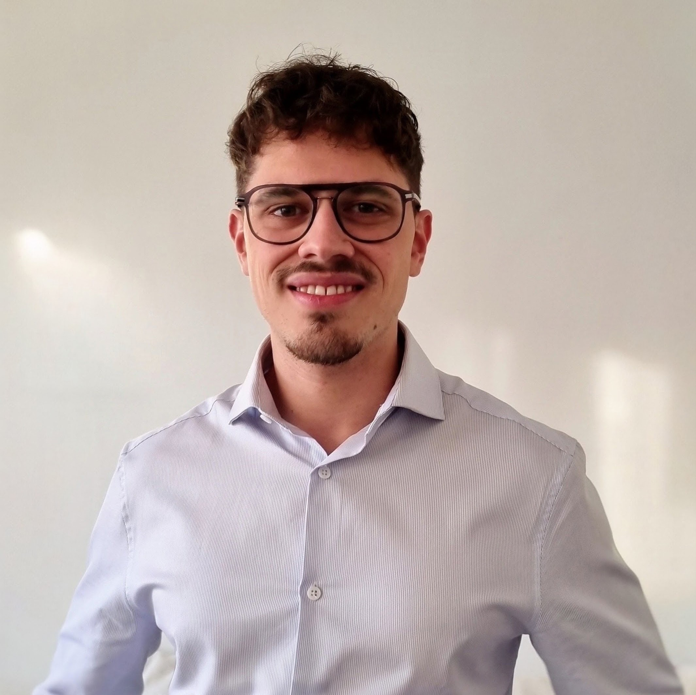

01/2025 – Présent
Développeur web & rédacteur – freelance
- Contribution au développement d'applications web, dont peakshi.com
- Participation aux réunions d'entreprise et rédaction des comptes rendus
CV en ligne
En reconversion vers la maintenance industrielle
Parcours scientifique et expérience en gestion d'entreprise. J'aime analyser, comprendre et résoudre des problèmes concrets.
Je souhaite mettre mes compétences au service de la maintenance industrielle, dans le cadre d’un contrat de professionnalisation, pour contribuer à la fiabilité des équipements et m'investir dans la durée.
manuarii.natanni@gmail.com 06 48 16 21 47
01/2025 – Présent
03/2024 – 08/2024
02/2019 – 08/2022
04/2017 – 01/2019
08/2026 – Présent
Programme : fondamentaux électriques, triphasé, moteurs, protections, lecture de schémas, mesure, sécurité et diagnostic.
04/2023 – 02/2024
Simplon Hauts-de-France - certification RNCP
09/2016 – 05/2017
IUT A Lille 1 (59)
Stage de fin non effectué pour créer mon entreprise.
09/2013 – 06/2016
Lycée Gustave Eiffel, Armentières (59)
2013
Lycée Édouard Branly, Boulogne-sur-Mer (62)
TECHNICIEN DE MAINTENANCE INDUSTRIELLE
– CONTRAT DE PROFESSIONNALISATION
31 ans · Boulogne-sur-Mer, 62200
Permis B et véhicule personnel · disponible immédiatement
Mobilité : Boulonnais, Calaisis, Dunkerquois
Parcours scientifique et expérience en gestion d'entreprise. J'aime analyser, comprendre et résoudre des problèmes concrets. Je souhaite mettre ces compétences au service de la maintenance industrielle, dans le cadre d’un contrat de professionnalisation, pour contribuer à la fiabilité des équipements et m'investir dans la durée.
08/2026 – Présent
Programme : fondamentaux électriques, triphasé, moteurs, protections, lecture de schémas, mesure, sécurité et diagnostic.
04/2023 – 02/2024
Simplon Hauts-de-France - certification RNCP
09/2016 – 05/2017
IUT A Lille 1 (59)
Stage de fin non effectué pour créer mon entreprise.
09/2013 – 06/2016
Lycée Gustave Eiffel, Armentières (59)
2013
Lycée Édouard Branly, Boulogne-sur-Mer (62)
01/2025 – Présent
03/2024 – 08/2024
02/2019 – 08/2022
04/2017 – 01/2019